Neue Sprachen wurden hinzugefügt und die Verwaltung manueller Programme sowie automatischer Downloads offizieller Medien wurde verbessert.
Die niederländische Übersetzung wurde hinzugefügt.
Die ungarische Übersetzung wurde hinzugefügt.
Die polnische Übersetzung wurde hinzugefügt.
Die Übersetzung in Filipino/Tagalog wurde hinzugefügt.
Die japanische Übersetzung wurde hinzugefügt, mit verbesserter Textdarstellung auf dem öffentlichen Bildschirm.
Die Verwaltung manueller Programme und automatischer Downloads offizieller Medien wurde verbessert: Downloads bleiben an die aktuelle Woche gebunden, und der Fortschritt für spätere Wochen wird klarer angezeigt.
Das Medien-Fenster nutzt bereits heruntergeladene offizielle Medien besser: Details, Vorschaubilder und lokale Dateien bleiben auch ohne Verbindung verfügbar.
Im Web-Monitor wurde die Möglichkeit hinzugefügt, die Liednummern und die Namen der Programmpunkte sowohl im Editor-Modus als auch im Controller-Modus zu ändern.
In den allgemeinen Einstellungen gibt es jetzt Mit Windows starten, damit JW Time beim Anmelden bei Windows automatisch geöffnet werden kann.
Die Stabilität beim Starten von Videos mit automatischer Zoom-Freigabe wurde verbessert.
Beim ersten Start zeigt JW Time einen Assistenten an, der die wesentlichen Einstellungen vor dem Öffnen der App sammelt.
Dies ist der empfohlene Pfad für eine Neuinstallation, da Sie so nicht sofort nach jeder Option suchen müssen
in den Einstellungsfeldern.
Sprache und Format: Wählen Sie die Sprache der Benutzeroberfläche, die Programmsprache und das Zeitformat.
Kongregation: Legen Sie den Namen des anfänglichen Profils fest. Dies ist nützlich, wenn Sie in Zukunft mehrere Profile verwalten.
Zusammenkünfte: gibt Tage und Startzeiten für den automatischen Countdown an.
Zusammenkunftsoptionen: Aktivieren Sie bei Bedarf die Anpassung der Dauer und die automatische Pause zwischen den Teilen.
Bildschirme: Konfigurieren Sie den Zeitzählerbildschirm und den Öffentlichen Bildschirm auf den richtigen Monitoren.
Am Ende des Assistenten können Sie JW Time öffnen und nur die erweiterten Optionen wie Medien, Webserver usw. ausführen.
Aufzeichnungen und Backups.
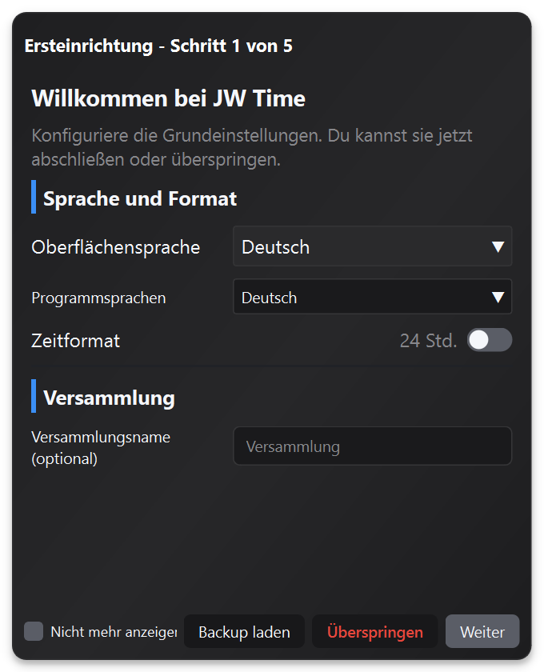
Schnelle Überprüfung, ob Sie den Assistenten überspringen ↑ Inhalt
Wenn Sie den Assistenten schließen oder überspringen, können Sie die wesentlichen Einstellungen manuell über die Einstellungen und das Hauptfenster konfigurieren.
Diese Checkliste dient auch als schneller Check vor der Zusammenkunft.
Sprache, Profil und Programm
Gehe zum Abschnitt 9 · Allgemeines nach Sprache und Zeitformat, dann im
Abschnitt 10 · Gemeinden wenn Sie ein Profil erstellen oder auswählen müssen. Überprüfen Sie das
Die geladene Playlist entspricht der Woche und der gewünschten Sprache.
Verwenden Sie das Hauptfenster, um Timer zu starten, Nachrichten an den Zeitzähler zu senden und das REC-Panel zu öffnen.
Wenn Sie Zusammenkünfte aufzeichnen, überprüfen Sie zunächst die Optionen Abschnitt 16 · Aufzeichnungen.
Der Hauptbildschirm ist das Herzstück der Anwendung. Von hier aus können Sie alle Timer starten, verwalten und überwachen
Sehen Sie sich während der Zusammenkunft wichtige Informationen wie den Titel des aktuellen Teils, die Uhr und die Uhrzeit an
Rückstände sowie die Überprüfung wichtiger Nachrichten und Benachrichtigungen.
Hauptbereiche
1.1 · Teiltitel und Uhr
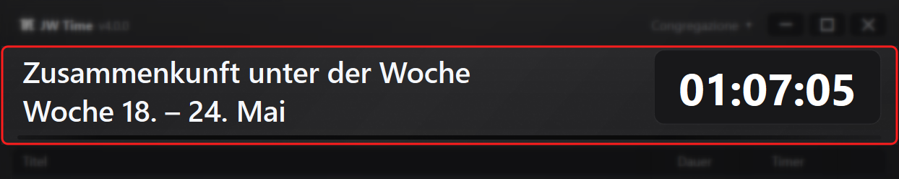
Der Titel des aktuellen Teils wird in der oberen Zeile angezeigt, während die Uhr unten angezeigt wird
die aktuelle Uhrzeit oder, wenn Sie einen Timer starten, den Countdown der verbleibenden Zeit. Auch im 12-Stunden-Format erscheint
AM/PM-Suffix in kleinerer Größe, um die Lesbarkeit zu verbessern.
1.2 · Timer-Tabelle
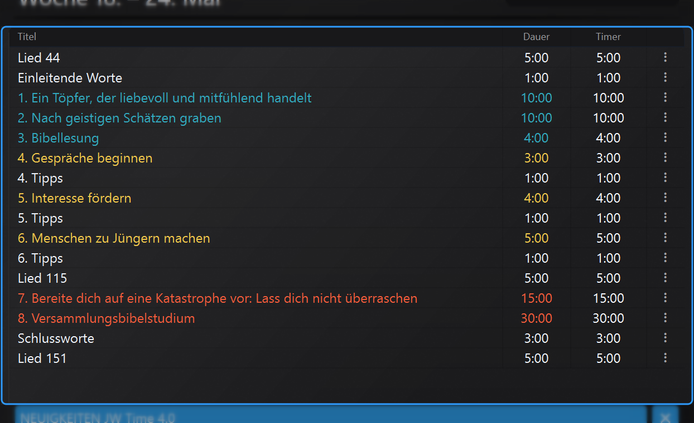
Listet das Programm der Zusammenkunft auf (Titel, Dauer, Status). Der Inhalt wird automatisch tagesaktuell geladen
ausgewählt: Die App erkennt, ob Wochenmitte oder Wochenende ist und schlägt den richtigen Zeitplan vor. Für die Knöpfe
und detaillierte Aktionen siehe Abschnitt 3 · Timer manipulieren.
Wenn Sie Spalte Ende anzeigen in den allgemeinen Einstellungen aktivieren, zeigt die Tabelle auch, wann der aktuelle Teil und jeder folgende Teil enden würde.
Das ist keine feste Planzeit, sondern eine Live-Projektion auf Grundlage der aktuellen Uhrzeit, der verbleibenden Timer und der angesammelten Zeitabweichung.
1.3 · Geschätzte Endzeit
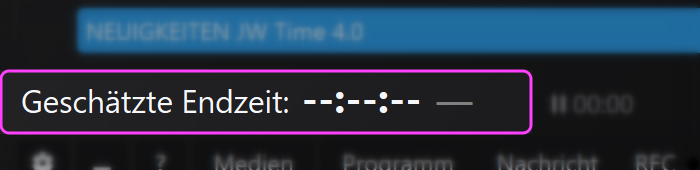
Zeigt die erwartete Schließzeit basierend auf dem Zeitplan an. Die -Abweichung erscheint neben:
+m:ss (gelb innerhalb von 1', rot darüber hinaus) = Verzögerung
−m:ss (grün) = Vorlauf
Die Zeit und der Indikator werden in Echtzeit aktualisiert. Wenn die Anpassungen für Bibelstudium / Turm aktiv sind
Wache, die Dauer wird neu berechnet, damit sie in die Schließzeit passt.
1.4 · Pausen-/Sprecherwechselzeit
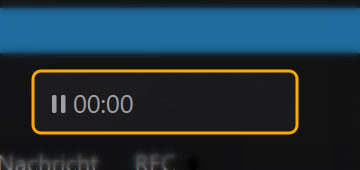
Kumulierter Zähler hh:mm:ss der technischen Pausen/Sprecherwechsel: summiert die Zeit, in der der Timer läuft
wurde pausiert. Während der Pause bleibt der Teilzeitzähler angehalten, während dieser Zähler erhöht wird. Ein Klick
Auf dem Indikator wird die Gesamtsumme auf Null zurückgesetzt.
1.5 · Haupttasten zur Timer-Verwaltung
Steuerelemente zum Starten, Stoppen und Verwalten von Timern: Stopp (rot), Pause und Start/Weiter (grün).
Die Pause-Taste pausiert den Teilzeitmesser (die Zählung bleibt gestoppt), während die Pausen-/Änderungszeit läuft
Lautsprecher nimmt weiter zu. Um die Pause zu verlassen, drücken Sie erneut Pause oder springen mit zum nächsten Teil
Start/Nächster: Die aufgelaufene Zeit wird im Zähler gemäß Punkt 1.4 erfasst.
1.6 · Nachrichten (Mitteilungen)
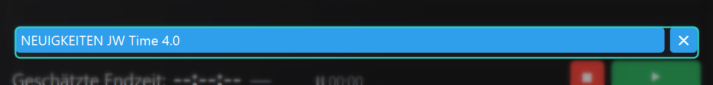
Wenn es offizielle Mitteilungen für die App gibt, erscheint auf dem Hauptbildschirm ein Feld/eine Meldung „Neuigkeiten“.
Wenn Sie darauf klicken, wird das Panel mit der Update-Zusammenfassung geöffnet.
1.7 · Schnellwerkzeuge
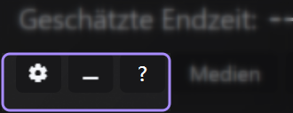
Schnellschaltflächen zum Öffnen von Einstellungen, Minimieren oder Wiederherstellen des Fensters und Zugreifen auf die Hilfe. Sie sind getrennt
von den Betriebsmodi, um das Endergebnis leichter zu machen.
1.8 · Betriebsmodi
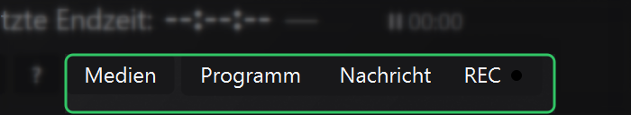
Von hier aus können Sie zum Medienfenster, zur Programmverwaltung, zu Nachrichten und zum REC-Panel wechseln. Der schwarze Punkt
neben REC zeigt den Aufnahmestatus an.
Dieser Abschnitt zeigt, wie Sie die richtige Setlist für die Woche laden, bei Bedarf eine manuelle Setlist erstellen und
Scrollen Sie schnell durch vergangene, aktuelle und nächste Wochen.
Standardmäßig lädt die App automatisch die Aufstellung der aktuellen Woche: Wochenmitte
von Montag bis Freitag und am Wochenende jeweils Samstag und Sonntag.
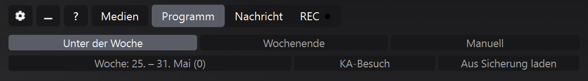
2.1 · Automatische Programmierung
Wochenmitte: Lädt den Wochentagsplan.
Wochenende: Laden Sie die Samstags-/Sonntagsaufstellung hoch und fragen Sie nach dem Lied, das vor Publikum sprechen soll.
2.2 · Wochenauswahl und Kalendervorschau
Die Schaltfläche Woche zeigt immer den Bereich (z. B. „Woche: 20. – 26. Okt.“) mit einem Abzeichen an
Dies gibt den Offset zur aktuellen Woche an (0, +1, -2 usw.). Ein Klick öffnet den kompakten Kalender für
Springen Sie direkt zur gewünschten Woche, ohne mehrmals durch die Schaltflächen „Zurück/Weiter“ scrollen zu müssen.
Sofort-Badge: Verstehen Sie, ob Sie die aktuelle, zukünftige oder vergangene Woche betrachten.
Wochenkalender: Wählen Sie die Wochen auf praktische Weise direkt aus.
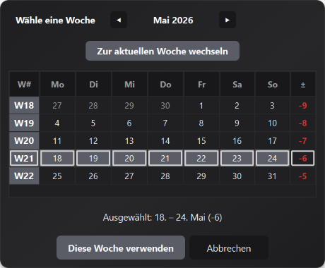
2.3 · Visit SC
Die Schaltfläche Visit SC, befindet sich zwischen der Wochenauswahl und „Aus Backup laden“ und wandelt die Wiedergabeliste um, wenn sie vorhanden ist
der Besuch des Kreisaufsehers. Beim Drücken leuchtet die Taste auf (ON) und die App bereitet die Teile automatisch vor
Für den Besuch geplante Sonderangebote.
Zusammenkunft unter der Woche: Das Bibelstudium der Versammlung wird in einen festen 30-minütigen Abschnitt mit dem Titel „SC-Besuch“ umgewandelt.
Wochenenden: Nach dem Wachtturm-Studium wird ein eigener Eintrag hinzugefügt und die Dauer wird an die Schließzeit angepasst.
Dedizierte Farben und Warnungen: Die Visit SC-Linie übernimmt ihre eigene Palette und bereitet den spezifischen endgültigen Song vor.
Schnelle Deaktivierung: Durch Ausschalten des Schalters kehrt der Tisch sofort zur Standardaufstellung zurück, ohne dass die anderen Änderungen verloren gehen.
2.4 · Aus Backup laden
Die Schaltfläche Aus Backup laden öffnet eine Liste der lokal gespeicherten Pakete, sortiert nach Datum, Art der Zusammenkunft und Sprache.
Es ist ideal, um offline zu arbeiten oder bereits vorbereitete Programme auf einem anderen PC wiederherzustellen.
Detaillierte Liste: Jede Zeile zeigt das Startdatum der Woche, den Typ (Midweek/Weekend) und die Sprache.
Sicheres Laden: Pakete werden überprüft und direkt auf die aktuelle Tabelle angewendet.
Meldungen löschen: Wenn keine Backups verfügbar sind, zeigt die App sofort eine Warnung an.
2.5 · Manueller Listenmodus
Die manuelle Liste ist nützlich, wenn der Zeitplan nicht aus dem Wochenprogramm stammt oder Sie ein spezielles Programm vorbereiten möchten.
Über das spezielle Bearbeitungsfenster können Sie Einträge erstellen oder bearbeiten, dabei Typ, Titel und Dauer festlegen und das Ergebnis speichern
um es später wiederzuverwenden.
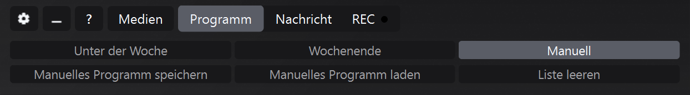
2.5.1 · Handbuch-Panel
Handbuch: Aktiviert die benutzerdefinierte Wiedergabeliste und zeigt die entsprechenden Befehle unter der Programmauswahl an.
Manuelle Liste speichern: Exportieren Sie die aktuelle Wiedergabeliste in eine Datei, um sie wiederzuverwenden oder auf einen anderen PC zu übertragen.
Manuelle Liste laden: Eine gespeicherte Liste importieren und verknüpfte Tabelle, Zeitzähler und Medien aktualisieren.
Liste löschen: Löscht die manuelle Aufstellung der aktuellen Woche und entfernt auch manuelle Medien, die mit diesem Entwurf verknüpft sind.
2.5.2 · Erstellen und speichern
Aktivieren Sie den manuellen Modus über das Programmfenster.
Verwenden Sie Tabellenbefehle, um Zeilen hinzuzufügen, zu löschen oder neu anzuordnen. Bei Bedarf öffnet JW Time das Sprachbearbeitungsfenster.
Speichern Sie die Liste, wenn Sie sie für ein anderes Mal behalten möchten.
Beim Speichern fragt JW Time Sie, was in die Datei .jwtimeplanaufgenommen werden soll.
Wählen Sie Manuelles Programm + Medien , wenn Sie auch lokale Dateien, URLs und Gruppen aus dem Medienfenster übertragen möchten.
Wählen Sie Nur manuelles Zeitprogramm , wenn Sie nur die Playlist mit Titeln und Dauer benötigen.
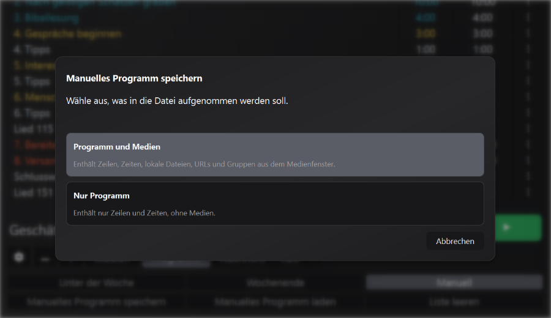
2.5.3 · Eine Liste neu laden oder leeren
Verwenden Sie Manuelle Liste laden , um eine gespeicherte Wiedergabeliste abzurufen.
Wenn die Liste Zeilen enthält, die als Standardlieder oder -teile erkannt werden, wendet JW Time einheitliche Farben und Verhalten an.
Verknüpfte Fenster werden nach dem Laden aktualisiert, sodass Zeitzähler und Durchschnitt mit der Tabelle übereinstimmen.
Verwenden Sie Liste löschen , wenn Sie für dieselbe Woche mit einer leeren Playlist neu starten möchten.
2.5.4 · Verknüpfte Medien
Wenn Sie Medien an eine manuelle Liste anhängen, bleibt beim Speichern und Laden die Verknüpfung zum vorbereiteten Programm erhalten.
Dies ist nützlich für Sondertreffen, lokale Versammlungen oder Programme, die nicht der Standardwoche folgen.
Wenn eine Datei nicht mehr verfügbar ist, benachrichtigt Sie die App, wenn Sie das Medienfenster öffnen oder verwenden, sodass Sie sie vor der Zusammenkunft ersetzen können.
Um ein Lied hinzuzufügen, verwenden Sie das Eingabemenü und wählen Sie das Liedelement aus. Auf diese Weise JW Time
erfasst die Songnummer korrekt, verbindet die verfügbaren Medien und der Timer-Bildschirm passt die Anzeige an
ohne den Titel manuell in die Zeile schreiben zu müssen.
In diesem Abschnitt werden die wichtigsten Timer-Verwaltungsvorgänge erläutert, z. B. das Hinzufügen, Bearbeiten oder Löschen von Einträgen.
und die Verwendung von Start-, Sprung- und Reset-Befehlen.
3.1 · Hauptoperationen
Zeilenmenü: Öffnen Sie die drei Punkte auf der rechten Seite für die Aktionen, die für das ausgewählte Teil verfügbar sind.
Über das Menü können Sie die Zeile starten oder zur nächsten wechseln, eine Zeile darüber oder darunter hinzufügen, sie duplizieren, zurücksetzen oder löschen.
Die Befehle Zeile darüber hinzufügen und Zeile darunter hinzufügen öffnen ein Untermenü mit Lied, Teil/Sprache und Ratschlag.
Bearbeiten Titel/Dauer: Doppelklicken Sie auf die Zelle und bestätigen Sie.
Formate Dauer: 5 → 5:00, 1:30 → 1:30 Minuten.
Starten und Fortfahren:
Startzeile startet den ausgewählten Teil.
Wenn eine Zeile ausgeführt wird, lautet der Befehl: Gehe zur nächsten Zeile..
Stoppen/Pause. Verwalten Sie den laufenden Timer über die untere Leiste.
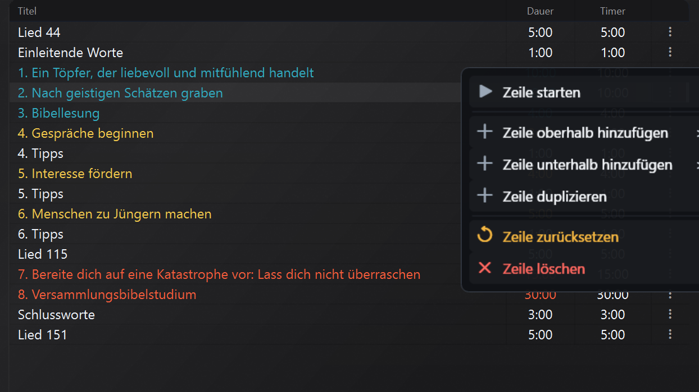
3.2 · Echtzeit-Updates
Der Timer wird ständig aktualisiert: Der Hauptcountdown oben zeigt die verbleibende Zeit des aktiven Teils an.
während die entsprechende Zeile in der Tabelle weiterhin hervorgehoben bleibt. Die Farbe der oberen Leiste greift die Farbe auf
des laufenden Teils.
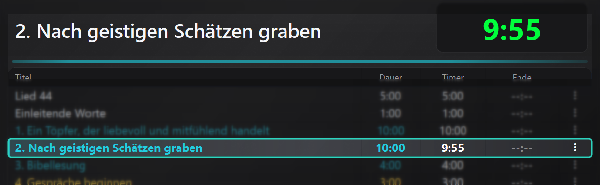
Wenn Sie eine Dauer ändern oder mit dem nächsten Teil fortfahren, wird die geschätzte Endzeit sofort neu berechnet. Dies ermöglicht
um das Lead/Lag-Delta und die für Pausen oder Sprecherwechsel akkumulierte Zeit zu überprüfen, ohne andere Panels zu öffnen.
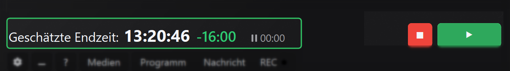
3.3 · Automatische Anpassung – Bibelstudium und Wachtturm-Studium
Wenn Adaptives Bibelstudium und/oder Adaptives Wachtturm-Studium in den Einstellungen aktiviert sind, passt die App
die Dauer des ausgewählten Teils dynamisch an, um die Schlusszeit der Zusammenkunft einzuhalten. Die Anpassung betrifft
nur die Teile mit aktiver Option und kann die Minuten basierend auf der akkumulierten Vor-/Verzögerung automatisch erhöhen oder verringern.
Im Bild ist die betroffene Zeile isoliert und der angepasste Wert orange hervorgehoben, sodass sofort klar ist, welcher Timer korrigiert wurde.
Sie können jederzeit manuell eingreifen: Der Adaptive rechnet ausgehend von der neuen Situation neu.
Das Medienfenster sammelt die mit der Woche verknüpften Inhalte: Lieder, Videos, Bilder und nützliche Verweise auf den Teil.
Es kann den Bediener dabei unterstützen, die Zusammenkunft vorzubereiten, verfügbare Inhalte zu prüfen und sie bei Bedarf zu starten.
Hinweis zur Nutzung: Das Medienfenster gibt dem Bediener ein unterstützendes Werkzeug, um bereits verfügbare multimediale Inhalte vorzubereiten, zu prüfen und zu verwalten. Die praktische Nutzung hängt von den lokalen Bedürfnissen ab und sollte immer in Übereinstimmung mit den Hinweisen der Versammlung und den geltenden Vorkehrungen erfolgen. Bei technischem Bedarf kann es auch als unterstützende Lösung oder als Reserve genutzt werden.
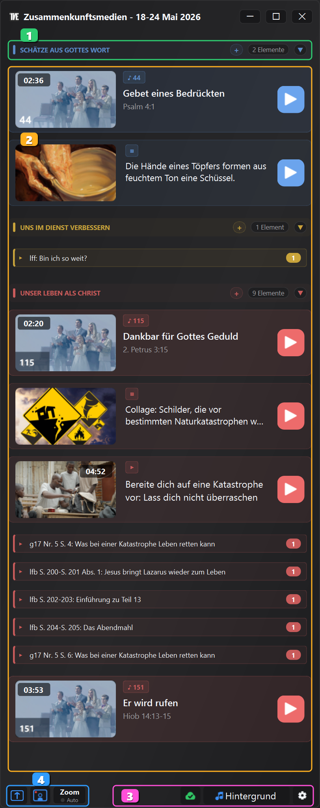
4.1 · Hinweise und Medienbereiche
Bereich 1 zeigt an, wann die offiziellen Medien der Woche noch nicht offline verfügbar sind. Sie können sie herunterladen
sofort oder verschieben. Das gleiche Verhalten kann über die
Abschnitt 13 · Medien-Einstellungen automatisiert werden, indem der automatische Download offizieller Medien aktiviert wird.
Unterhalb des Hinweises finden Sie die Abschnitte der Playlist, mit farbigem Titel, Artikelzähler und Schnellbefehlen.
Hinweis: Der Download offizieller Medien setzt voraus, dass das Netzwerk JW Time den Zugriff auf jw.org und die für Medien verwendeten Ressourcen erlaubt. Der alternative Download für Programme ist für Medien nicht verfügbar. Wenn Router, Firewalls, DNS oder Inhaltsfilter religiöse Websites oder den Zugriff von JW Time blockieren, können offizielle Medien möglicherweise nicht heruntergeladen werden; in diesem Fall können Sie bereits offline vorhandene Medien nutzen oder lokale Dateien manuell hinzufügen.
4.2 · Inhaltsliste
Bereich 2 enthält Registerkarten mit Vorschau, Titel, Referenz und Startschaltfläche. Die Farben spiegeln die Bereiche der Aufstellung wider,
So können Sie schnell Lieder, Bilder, Videos und Referenzen finden, die sich auf das Teil beziehen.
Im Kontextmenü können Sie ein Element manuell als verwendet oder nicht verwendet markieren. Wenn Bereits verwendete Medien dämpfen aktiviert ist, bleiben verwendete Elemente mit einem dezenteren Stil erkennbar.
Die Fenster für offizielle Videos, Audios und Bilder enthalten außerdem den Modus Global, wenn Sie außerhalb der aktuellen Kategorie suchen müssen.
4.3 · Untere Leiste
Bereich 3 sammelt die Schnellbefehle des Medienfensters: heruntergeladene Inhalte, Vorschau, Synchronisierung,
Hintergrund und spezielle Einstellungen. Es bleibt unten, um auch dann erreichbar zu sein, wenn die Liste lang ist.
4.4 · Zoom-Steuerelemente
Bereich 4 sammelt die Zoom-Steuerelemente des Medienfensters. Sie sind für diejenigen gedacht, die Medien auch im Innenbereich zeigen
Videokonferenz und Arbeiten mit dem Public Screen auf dem Raummonitor.
Teilen– Sendet die konfigurierte Verknüpfung an Zoom, um die Freigabe zu starten oder zu stoppen.
Zoom anzeigen/ausblenden: Wird verwendet, um die Lautsprecher oder das Zoom-Fenster auf dem öffentlichen Monitor anzuzeigen. JW Time verbirgt den Öffentlichen Bildschirm vorübergehend und lässt Sie sehen, was sich darunter befindet: Aus diesem Grund muss das Zoom-Lautsprecherfenster oder ein doppelter Bildschirm mit Zoom bereits hinter dem Öffentlichen Bildschirm positioniert sein, bevor Sie die Taste drücken.
Auto Zoom: Aktiviert die Zoom-Automatisierung für die Sitzung. Wenn Sie ein Medium starten, kann JW Time die Freigabeverknüpfung automatisch senden und, sofern konfiguriert, diese am Ende stoppen.
Bevor Sie diese Tasten verwenden, richten Sie in Zoom eine globale Verknüpfung zur Bildschirmfreigabe ein und geben Sie ein
die gleiche Kombination in Abschnitt 14 · Zoom. Wenn die beiden Tastenkombinationen nicht übereinstimmen,
JW Time sendet den Befehl, aber Zoom reagiert nicht wie erwartet.
4.5 · Vorbesprechung und Hintergrundmusik
Das Bedienfeld Hintergrund verwaltet die Musik vor der Zusammenkunft und, sofern konfiguriert, auch nach der Zusammenkunft.
ohne es mit den Medien in der Aufstellung zu vermischen. Während der Wiedergabe werden das aktuelle Lied, das nächste Lied und
Fortschritt und Dauer.
Sie können starten, pausieren, zum vorherigen oder nächsten Lied springen, die Zufallswiedergabe aktivieren und öffnen
die Playlist. Die Musikeinstellungen, einschließlich automatischem Verhalten und Überblendungen, werden über das Bedienfeld
Abschnitt 13 · Medien.
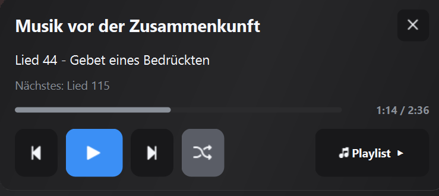
5 · Öffentlicher Bildschirm und Zeitzähler ↑ Inhalt
JW Time 4.0 trennt die Ansichten: Der Öffentliche Bildschirm wird für Inhalte verwendet, die für den Raum sichtbar sind.
während der Zeitzählerbildschirm denjenigen gewidmet bleibt, die die Zeiten verfolgen.
5.1 · Öffentlicher Bildschirm
Der öffentliche Bildschirm zeigt Countdown, Begrüßungsnachricht, Jahresangabe, Logo und Inhalte
Ansichten in einem separaten Fenster.
Vor der Zusammenkunft: Zeigt den Countdown und den konfigurierten Text an.
Während der Zusammenkunft: kann für öffentliche Inhalte oder spezielle Szenen verfügbar bleiben.
Die Zeit angepasst Der Zählerbildschirm zeigt die Uhr, den Countdown des laufenden Teils, Nachrichten für den Sprecher und Zustände im Zusammenhang mit der Zeitverwaltung an.
Es ist die am besten geeignete Ansicht für Podiums-, Präsidenten- oder Zeitarbeiter.
Anzeige auf ausgewähltem Monitor oder freiem Fenster.
Aktuelle Teilzeitbeschäftigung und Kontextinformationen.
Vollständige oder teilweise Bildschirmnachrichten, die vom Hauptfenster gesendet werden.
angepasst werden. Sie können mit einer bereits verfügbaren Voreinstellung beginnen oder das Layout entsprechend Ihren Anforderungen ändern Bedürfnisse. Der öffentliche Bildschirm hat
eigene Einstellungen im Abschnitt 12 · Bildschirm; Hier konzentrieren wir uns auf das Layout des Zeitzählers.
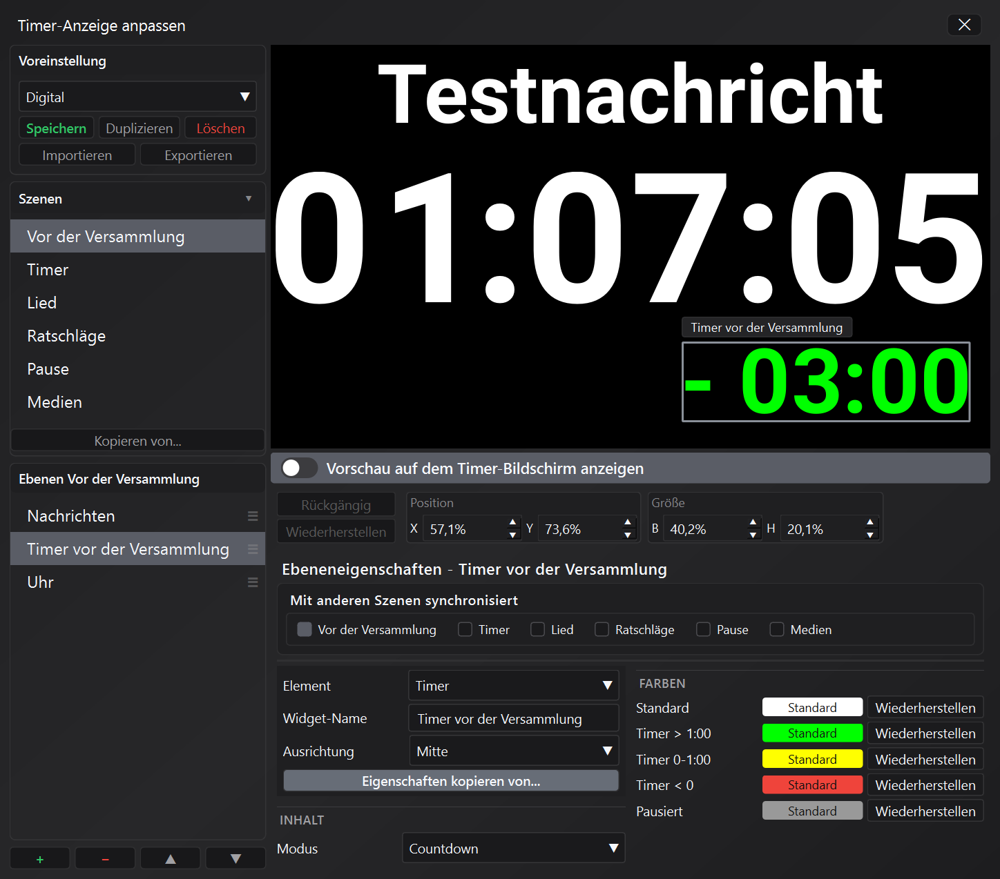
Ausgehend von einer Voreinstellung
Eine Voreinstellung ist ein Startlayout.
Sie können eine Voreinstellung im Abschnitt 9 · Allgemeines auswählen und unverändert verwenden oder den Anpassungseditor öffnen, um sie zu bearbeiten.
Wählen Sie eine Szene
Das Layout ist in Szenen organisiert.
Jede Szene entspricht einer anderen Situation auf dem Zeitzählerbildschirm. Dadurch können Sie je nach Zeitpunkt oder Art des angezeigten Teils ein anderes Layout anzeigen.
Bevor Sie Änderungen vornehmen, prüfen Sie immer, welche Szene ausgewählt ist.
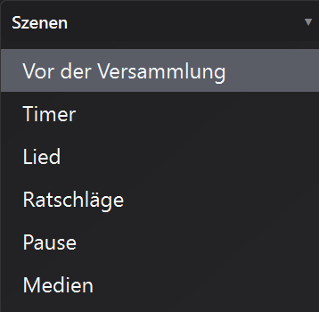
Verfügbare Ebenentypen
Wenn Sie im Ebenenbedienfeld auf + drücken, zeigt JW Time die Elementtypen an, die Sie der Szene hinzufügen können.
Einige Ebenen lesen echte Daten der Zusammenkunft und ändern sich automatisch. Andere werden zum Aufbau des grafischen Layouts verwendet.
Es ist nicht praktisch, alle Eigenschaften jeder Ebene im Handbuch anzuzeigen, da sich das Eigenschaftenfenster je nach Version ändert
zum ausgewählten Typ. Hier erfahren Sie, was die einzelnen Level bewirken und wann Sie sie verwenden.
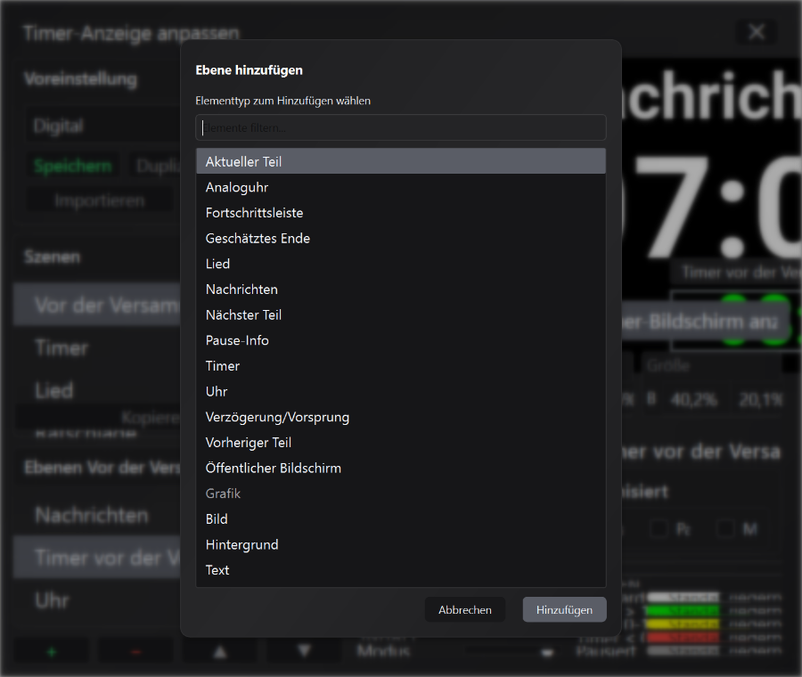
Hauptdynamikebenen
Timer: Zeigt das Tempo des aktiven Teils an. Es kann als Countdown oder Countup eingestellt werden.
Lied: Songinformationen anzeigen, wenn es in der Szene um einen Song geht.
Nachrichten: Zeigt Nachrichten an, die vom Hauptfenster gesendet wurden, sowohl im Vollbildmodus als auch im Teilformat.
Uhr: Zeigt die digitale Zeit an.
Analoge Uhr– Fügt eine anpassbare grafische Uhr hinzu.
Informationen zur Zusammenkunft
Aktueller Teil: Zeigt den Titel des aktuellen Teils an.
Nächster Teil: Zeigt den nächsten Teil an, der für die Vorbereitung der Änderung nützlich ist.
Vorheriges Teil: Zeigt Informationen über das gerade fertiggestellte Teil an, wenn das Layout dies erfordert.
Geschätztes Ende– Zeigt die von der App berechnete Endzeit an.
Verzögerung/Früh: Zeigt das Delta im Vergleich zur geplanten Zeit an.
Pauseninfo: Zeigt Informationen zu Pausen oder technischer Zeit an.
Fortschrittsbalken: Zeigt grafisch den Fortschritt der Zeit an.
Kostenlose Grafikebenen
Hintergrund: Fügt ein farbiges Feld hinzu, das zum Erstellen von Bändern, Kontrastbereichen oder visuellen Containern nützlich ist.
Text: fügt einen personalisierten festen Text hinzu.
Bild: Fügt ein Logo oder ein dekoratives Bild hinzu.
Hintergrund, Text und Bild Ebenen können mehrfach hinzugefügt werden.
Wenn auf anderen Ebenen bereits ein Element desselben Typs vorhanden ist, bietet Ihnen der Editor an, es mit einer anderen Szene zu verknüpfen
oder bei Bedarf eine unabhängige zu erstellen.
Bearbeiten des Layouts
Im Editor können Sie die in der ausgewählten Szene vorhandenen Ebenen bearbeiten.
Für jede Ebene können Sie die Position und Größe auf drei Arten ändern:
mit der Maus, Verschieben oder Ändern der Größe des Felds in der Vorschau
mit der Tastatur, Verwenden der Pfeile, um es zu verschieben
mit den unter der Vorschau angezeigten Positions- und Größenwerten
Die X- und Y-Werte steuern die Position der Ebene.
Die Werte „Breite“ und „Alt“ steuern die Größe der Ebene.
Alle diese Werte werden in Prozent ausgedrückt.
Im Ebenenbedienfeld können Sie auch die verwaltenÜberlagerungsordnung: Jedes Level kann
Bleiben Sie über oder unter den anderen und bestimmen Sie, was im Falle einer Überlappung im Vordergrund erscheint.
Sie können die Reihenfolge ändern, indem Sie die Ebenen in der Liste ziehen oder die Schaltflächen verwenden
▲ und ▼ darunter.
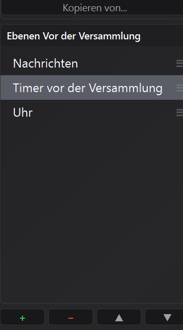
Ebenen verschieben, in der Größe ändern und anordnen
Nachdem Sie eine Ebene ausgewählt haben, können Sie:
Ziehen Sie es mit der Maus, um es in der Vorschau zu verschieben
Verwenden Sie die Pfeiltasten der Tastatur, um die Position anzupassen (Pfeile: 0,5% — Schicht: 2,0% — Strg: 0,1%)
Ziehen Sie die Kanten oder Ecken des Rahmens, um die Größe zu ändern
Unterhalb der Vorschau finden Sie die numerischen Bedienelemente X, Y, Breite und Alt
um Position und Größe präzise anzupassen.
Speichern Sie das Layout nach den Änderungen und wenden Sie es an. Sie können den Editor jederzeit erneut öffnen, um ihn zu aktualisieren.
Die Nachrichtenfunktion ermöglicht es Ihnen, während der Zusammenkunft diskret und klar mit dem Redner zu kommunizieren
ihn warnen oder ihm Anweisungen geben, ohne den Fortschritt des Teils zu unterbrechen oder zu stören. Meldungen erscheinen auf dem Bildschirm
des Zeitzählers, sodass der Sprecher sie in Echtzeit ohne Ablenkungen sieht.
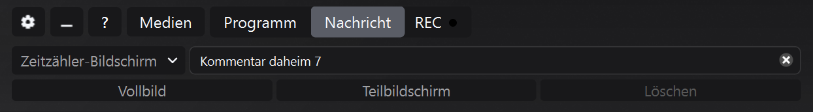
6.1 · Vollbildmeldung
Klicken Sie in den Bereich, in dem „Nachricht einfügen“ steht.
Geben Sie den Text ein.
Drücken Vollbild → Der Text erscheint im Vollbildmodus auf dem Timer-Monitor.
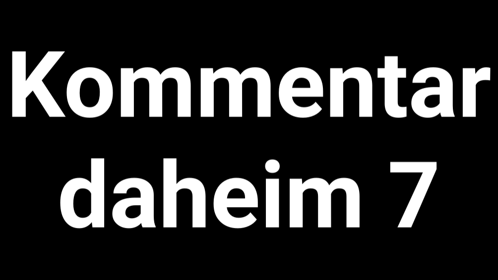
6.2 · Teilweise Bildschirmmeldung
Klicken Sie in den Bereich, in dem „Nachricht einfügen“ steht.
Geben Sie den Text ein.
Drücken Teilbildschirm → Der Text erscheint im Zeitzählerfenster, ohne ihn vollständig zu verdecken, sodass der Sprecher sowohl die Nachricht als auch den Timer sehen kann.
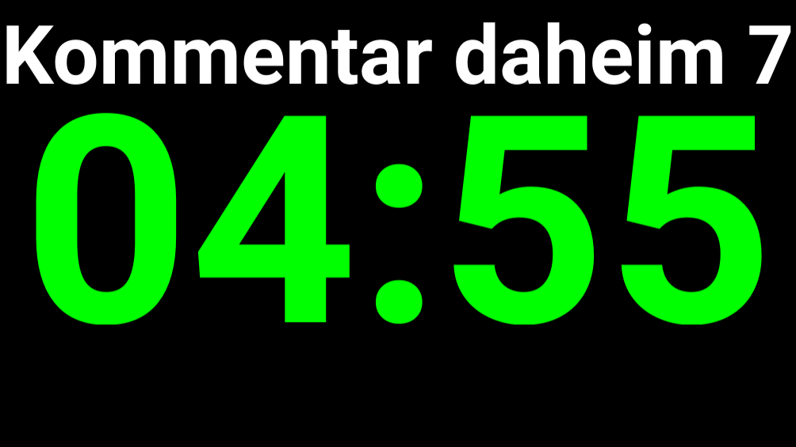
6.3 · Spiegelzeitzähler
Wenn Sie eine Nachricht senden, wird automatisch ein in der Größe veränderbares und verschiebbares Vorschaufenster angezeigt
genau das, was der Sprecher auf dem Timer-Monitor sieht. Dadurch können Sie die Anzeige in Echtzeit überprüfen
der Nachricht und des Timers.
Der Knopf REC Es befindet sich in der unteren Leiste neben Zeitplan und Nachricht. Der Punkt neben dem Text zeigt
den Aufnahmestatus (Warten, aktiv, pausiert oder MP3-Konvertierung), während das REC-Feld schnelle Steuerungsmöglichkeiten bietet
um den JWTimeREC-Ordner zu öffnen, manuelle Aufnahmen zu verwalten und die Audiopegel von PC und Mikrofon zu überwachen.
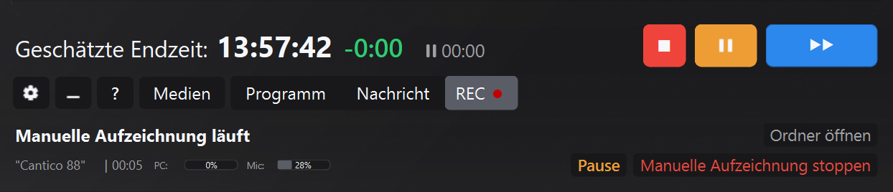
7.1 · Tastenanzeigen und -zustände
Warten: Der Punkt bleibt grau und auf dem Bedienfeld wird „Warten“ / „Keine aktive Aufnahme“ angezeigt.
Aufnahme läuft: Der Punkt blinkt rot und auf dem Bedienfeld wird „Aufnahme läuft“ mit Titel und Timer des Teils angezeigt.
Pause: Der Punkt ändert sich in Orange; Die Registrierung wird ausgesetzt und kann wieder aufgenommen werden.
MP3-Konvertierung: Der Punkt wird blau und die Schaltfläche bleibt deaktiviert, bis der Dateiexport abgeschlossen ist.
7.2 · REC-Schnellsteuerungen
Das REC-Panel sammelt die zu verwendenden Steuerelemente, ohne die Einstellungen einzugeben:
Ordner öffnen: Öffnet direkt das JWTimeREC-Verzeichnis mit den Aufzeichnungen.
Aufnahme aktivieren/deaktivieren: Manuelle Aufnahme aktivieren oder stoppen, ohne die Einstellungen einzugeben.
Pause/Fortsetzen: Schaltfläche, die während der Aufnahme sichtbar ist, um den Ton (z. B. Gebete) vorübergehend anzuhalten und in derselben Datei fortzusetzen.
Online-Details: Der Titel der aktiven Zeile und die aktualisierte Dauer werden unter dem Status angezeigt.
Automatische Meldungen: Zeigt sofort an, wenn die Aufzeichnung deaktiviert ist oder eine Konvertierung läuft.
7.3 · Umschaltbereich mit Audiopegeln
Wenn Sie REC öffnen, erscheint in der unteren Leiste ein immer sichtbares Feld mit Aufnahmestatus und Audiopegel.
Hier können Sie manuelle Aufnahmen starten/stoppen, PC-/Mikrofonpegel überwachen und den JWTimeREC-Ordner mit einem einzigen Klick öffnen.
Wenn der Webserver aktiv ist, können Sie ihn von einem anderen Gerät im selben lokalen Netzwerk über einen Browser öffnen.
Dadurch kann der Zeitzähler auf externen Projektoren, Tablets oder Computern angezeigt werden und ist für den Präsidenten nützlich
die dem Timer der verschiedenen Teile folgt.
Die vollständige Konfiguration des Webservers, der Fernsteuerung, der Fernverbindung und des QR finden Sie unter Abschnitt 15 · Verbindung und Server.
8.1 · Anzeigen des Web-Monitors im lokalen Netzwerk
Über den Browser können Sie:
Timer und Zeitzähler im Vollbildmodus anzeigen.
Drucken Sie die Wiedergabeliste.
Überprüfen Sie den Timing-Fortschritt in Echtzeit.
Führen Sie Fernoperationen am Timer und Zeitplan durch, wenn die Fernsteuerung aktiviert ist.
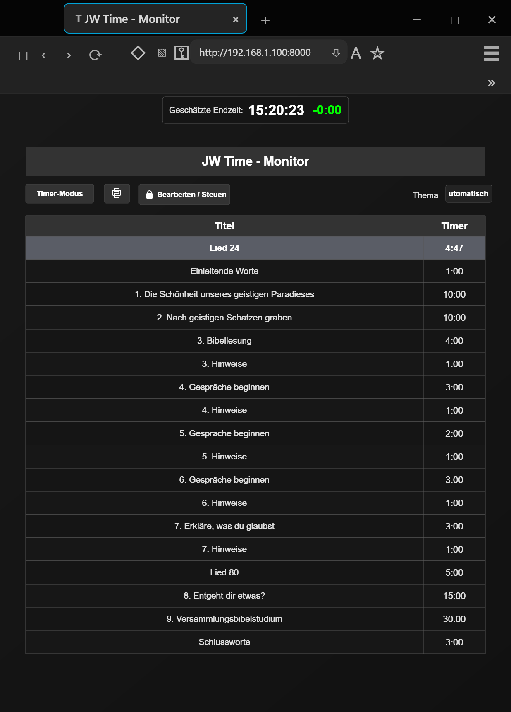
8.2 · Steuerung von Timer und Programm über den Browser
Wenn die Fernsteuerung aktiviert ist, können Sie vom Browser aus auf Timer und Programm eingreifen, ohne dass dies erforderlich ist
vor dem Hauptrechner.
Verfügbare Vorgänge hängen von den konfigurierten Berechtigungen ab und können Folgendes umfassen:
Starten des Timers
Anhalten und Fortsetzen
Anhalten
Steuern des Programms/der Wiedergabeliste
Ändern der in der Wiedergabeliste verfügbaren Dauer oder Werte, wenn die autorisierte Rolle dies zulässt
Sie können Öffnen Sie den Webserver, indem Sie die in der App angezeigte Adresse eingeben oder den QR verwenden, falls verfügbar.
Abhängig von der Konfiguration können unterschiedliche Zugriffsebenen bereitgestellt werden, beispielsweise nur für den Zugriff
Anzeige oder zur Kontrolle und Änderung. Falls konfiguriert, ist für den Zugriff möglicherweise eine PIN erforderlich.
Wenn sich die Person, die JW Time verfolgen oder steuern muss, nicht im selben lokalen Netzwerk befindet, können Sie eine temporäre Remote-Verbindung erstellen.
Dieses Szenario eignet sich für Videokonferenzen, Fernunterstützung oder die Verwaltung über ein angeschlossenes Gerät
zu einem anderen Netzwerk.
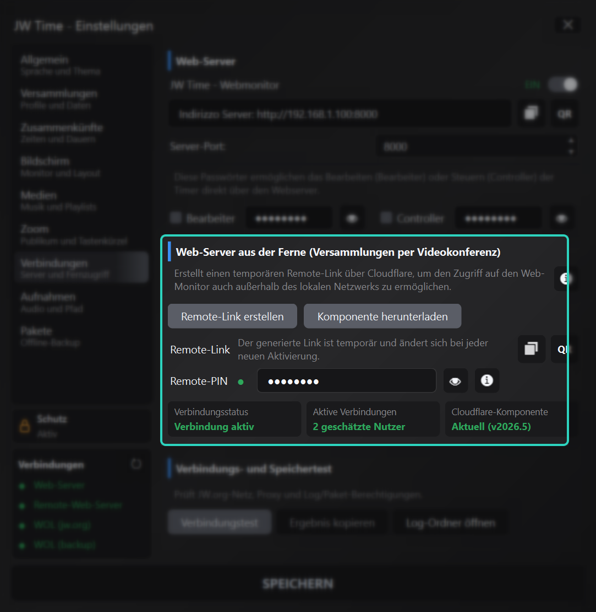
Gleiche Weboberfläche: Der Remote-Link öffnet den Web-Monitor über den Browser, wie es im lokalen Netzwerk geschieht.
Temporäre Verbindung: Die Remote-Verbindung ändert sich bei jeder Aktivierung und sollte nicht als dauerhaft betrachtet werden.
Remote-PIN– Schützt bei Konfiguration Funktionen, die von außerhalb des lokalen Netzwerks zugänglich sind.
Verwendung mit Videokonferenz: Ermöglicht jedem, der die Zusammenkunft von außerhalb des Netzwerks verfolgt, das Programm gemäß den festgelegten Berechtigungen anzusehen oder zu überprüfen.
Der operative Teil wird im Abschnitt 15.2 · Remote-Webserver konfiguriert.
Die Zoomeinstellungen bleiben getrennt: Zoom verwaltet die Freigabe und Verknüpfungen.
während die Remote-Verbindung den Web-Monitor betrifft.
Teil II · Einstellungsfenster
In diesem Teil können Sie das Verhalten der App konfigurieren: allgemeine Einstellungen, Gemeindeprofile, Zusammenkünfte,
Zeitzählerbildschirm, Medien, Zoom, Web- und Servermonitor, Aufzeichnungen und Sichern und Wiederherstellen.
Die Schaltfläche SPEICHERN übernimmt alle Änderungen.
Wählen Sie die Sprache: Ändern Sie die Sprache der Benutzeroberfläche.
Programmsprachen: Definiert, in welcher Sprache der Wochenplan heruntergeladen oder angezeigt werden soll.
Wählen Sie das Thema: Legen Sie das grafische Thema der App fest.
Schnittstellenskalierung: Text- und Steuergrößen anpassen; Die Änderung gilt nach dem Neustart.
Zeitformat: Wechselt zwischen dem 24-Stunden-Format und dem 12-Stunden-AM/PM-Format.
Timer-Verwaltung
Automatische Pause: fügt automatisch eine Pause zwischen einem Teil und dem nächsten ein, wenn Sie Start/Weiter drücken.
Spalte Ende anzeigen: zeigt in der Programmtabelle die voraussichtliche Endzeit des aktuellen und der folgenden Teile, live berechnet aus der aktuellen Uhrzeit, den verbleibenden Timern und der angesammelten Zeitabweichung.
Start
Mit Windows starten: Öffnet JW Time automatisch, wenn du dich bei Windows anmeldest.
Neuigkeiten
Beim Start anzeigen, was neu ist: Öffnet eine kurze Zusammenfassung der in der App eingeführten Funktionen, sodass Benutzer von JW Time schnell herausfinden können, was einen Versuch wert ist.
Sie können es deaktivieren, wenn die Gruppe bereits mit der installierten Version vertraut ist.
In diesem Bereich können Sie Gemeindeprofile verwalten. Jedes Profil kann dedizierte Konfigurationen verwalten,
So kann sich JW Time an unterschiedliche Kontexte anpassen, ohne jedes Mal Fenster, Medien und Layout neu konfigurieren zu müssen.
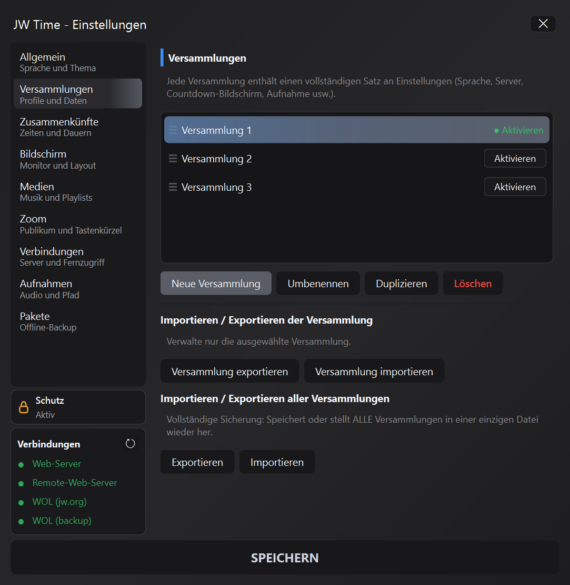
Gemeindeprofile
Gemeindeliste: Zeigt die verfügbaren Profile an. Jedes Profil verwaltet seine eigene Sprache, seinen eigenen Server, seine eigenen Bildschirme, Aufzeichnungen, Medien und Einstellungen.
Neue Kongregation– Erstellen Sie ein separates Profil zur Konfiguration.
Umbenennen: Ändert den Namen des ausgewählten Profils, ohne die Einstellungen zu verlieren.
Duplizieren: Erstellt eine Kopie des aktuellen Profils, nützlich, wenn zwei Konfigurationen ähnlich sind.
Löschen: Entfernt das ausgewählte Profil, wenn es nicht mehr benötigt wird.
Importieren/Exportieren
Kongregation exportieren: Nur das ausgewählte Profil speichern.
Gemeinde importieren: Lädt ein zuvor exportiertes Profil.
Exportieren– Erstellt eine vollständige Sicherung aller Gemeinden.
Importieren– Stellt eine Sicherung wieder her, die mehrere Gemeinden enthält.
Dieses Panel dient zur Programmierung des Start-Countdowns der Zusammenkunft auf dem Öffentlichen Bildschirm.
Sie legen den Tag, die Uhrzeit und den Vorlauf (in Minuten) fest, den Sie ausführen möchten
Starten Sie den Countdown.
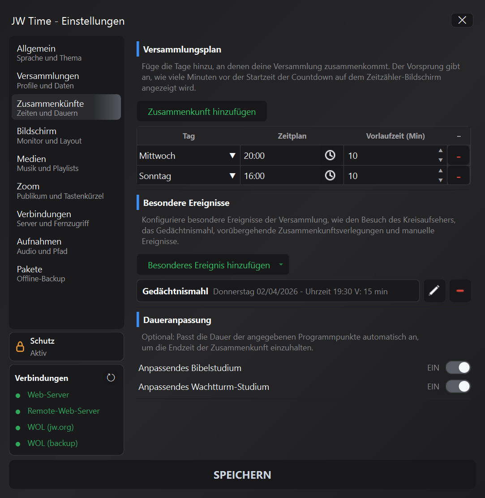
11.1 · Terminplanung (Tag · Uhrzeit · Vorlauf)
Zusammenkunft hinzufügen: Fügt eine neue Zeile in die Zeitplantabelle ein.
Tag: Wählen Sie den Wochentag aus, an dem die Zusammenkunft stattfindet.
Zeit: Legen Sie die Startzeit der Zusammenkunft fest.
Vorlauf (Min.): Wie viele Minuten vor der eingestellten Zeit muss der Countdown auf dem Öffentlichen Bildschirm erscheinen.
-: Löschen Sie die Zeitleiste, die nicht mehr benötigt wird.
11.2 · Sonderereignisse
Sonderereignis hinzufügen: Erstellen Sie Ereignisse wie Kreisaufseherbesuche, Gedenkveranstaltungen oder manuelle Ereignisse.
Visit SC: Wenden Sie die für den Besuch geltenden Regeln und Zeiten an.
Memorial– Zeichnen Sie einen besonderen Termin mit einem bestimmten Datum und einer bestimmten Uhrzeit auf.
Bearbeiten / Löschen: Mit den Schaltflächen auf der rechten Seite können Sie das Ereignis aktualisieren oder entfernen.
11.3 · Zeit anpassen
Adaptives Bibelstudium– Passt das Kongregationsbibelstudium automatisch an, um die Endzeit einzuhalten.
Adaptive Wachtturm-Studie: Wenden Sie die gleiche Logik auf die Wachtturm-Studie an.
Hinweis: Die Startzeiten gelten für den öffentlichen Countdown. Die voraussichtliche Endzeit hängt stattdessen vom Zeitplan und etwaigen Anpassungen der Dauer ab.
Dieses Panel sammelt die Einstellungen für den Zeitzählerbildschirm und den Öffentlichen Bildschirm. Von hier aus können Sie
Wählen Sie, wo die Informationen angezeigt werden, wie sie präsentiert werden und welche Elemente während der Zusammenkunft sichtbar gemacht werden sollen.
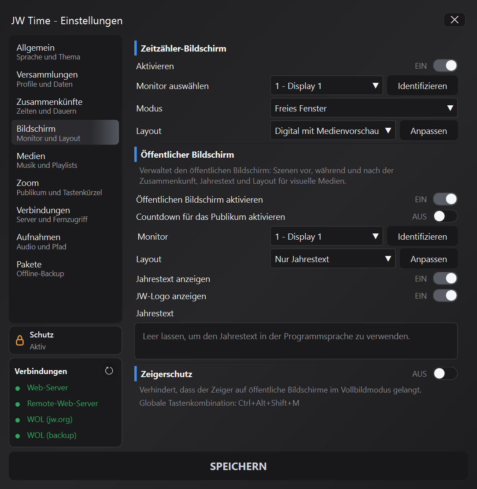
Aktivieren Sie: Aktiviert oder deaktiviert den Zeitzählerbildschirm.
Monitor auswählen: Wählen Sie den Monitor oder das Fenster aus, in dem der Zeitzähler angezeigt werden soll.
Identify: Zeigt eine Referenz auf dem ausgewählten Monitor an, nützlich, wenn mehrere Displays angeschlossen sind.
Modus: legt fest, wie der Zeitzähler geöffnet werden soll, beispielsweise als freies Fenster.
Transparenter Hintergrund: Macht das Fenster transparent, wenn der Modus dies zulässt.
Layout: Wählen Sie die Grafikvoreinstellung des Zeitzählerbildschirms aus.
Anpassen: öffnet den Editor des ausgewählten Layouts.
Öffentlicher Bildschirm
Öffentlichen Bildschirm aktivieren: Aktiviert das Fenster, das den im Raum sichtbaren Inhalten gewidmet ist.
Countdown für die Öffentlichkeit aktivieren: Zeigt den Countdown bis zum Beginn der Zusammenkunft auf dem Öffentlichen Bildschirm an.
Monitor: Wählen Sie aus, wo das öffentliche Fenster geöffnet werden soll.
Layout: wählt die Grafikvoreinstellung des Öffentlichen Bildschirms.
Jahresangabe anzeigen: Jahresangabe aktivieren oder ausblenden.
JW-Logo anzeigen: Logo in der öffentlichen Szene anzeigen oder ausblenden.
Jahresschreibtext: ermöglicht Ihnen das Einfügen eines personalisierten Textes; Bleibt es leer, wird die Jahreszahl in der Programmsprache verwendet.
Dieses Panel verwaltet das Verhalten des Medienfensters, des lokalen Caches und der mit den Inhalten verknüpften Optionen
während oder nach der Sitzung verwendet werden.
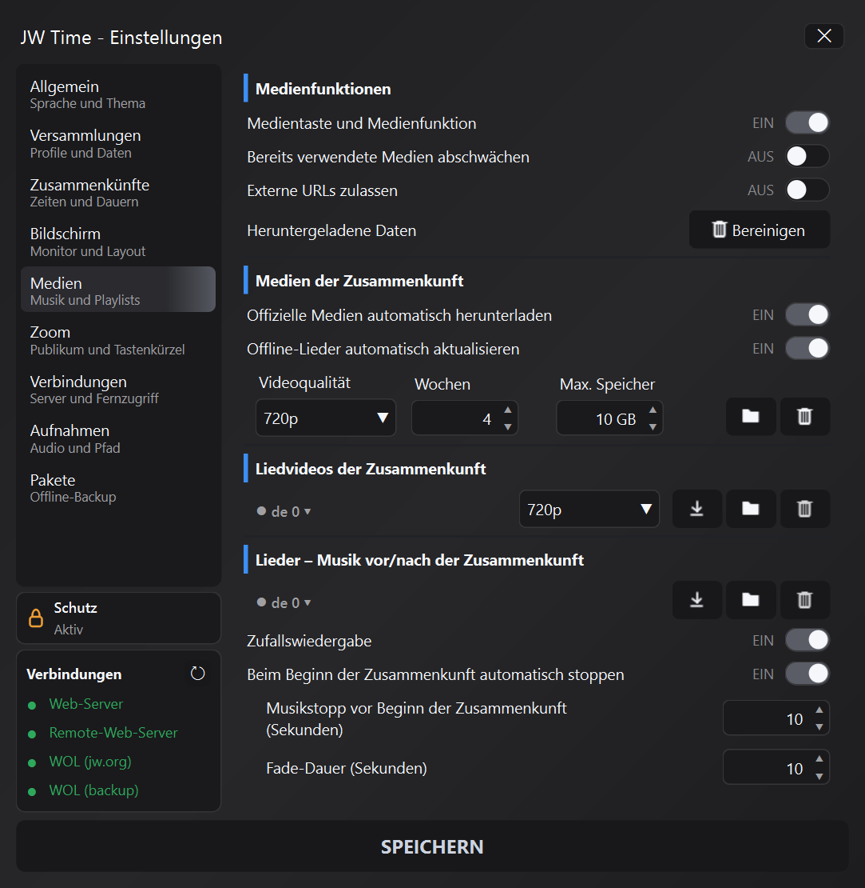
Medienfunktionen
Medienschaltfläche und -funktion: Blendet die Medienschaltfläche ein oder aus und aktiviert zugehörige Funktionen.
Bereits verwendete Medien dämpfen: macht verwendete Elemente im Medienfenster leichter erkennbar.
Externe URLs zulassen: erlaubt nach Bestätigung HTTPS-URLs außerhalb von jw.org und wol.jw.org und zeigt sie im integrierten Browser an.
Mediensammlung
Automatisches Herunterladen der offiziellen Medien: hilft, die offiziellen Medien der Woche im Voraus verfügbar zu machen, wenn das Netzwerk es zulässt.
Die Verwaltung manueller Programme und automatischer Downloads offizieller Medien wurde verbessert: Downloads bleiben an die aktuelle Woche gebunden, und der Fortschritt für spätere Wochen wird klarer angezeigt.
Songs automatisch offline aktualisieren: Hält den Katalog der heruntergeladenen Songs auf dem neuesten Stand.
Videoqualität: Wählen Sie die Auflösung der offiziellen Videos.
Wochen: gibt an, wie viele Wochen aufbewahrt oder vorbereitet werden sollen.
Max Space: Begrenzt den vom Mediencache verwendeten Speicherplatz.
Ordner / löschen: Öffnet den Inhaltsordner oder bereinigt heruntergeladene Dateien.
Songs und Musik
Video-Lieder für Zusammenkünfte: verwaltet Download, Qualität und Ordner der Lied-Videos.
Lieder – Musik vor/nach der Zusammenkunft: verwaltet die als Hintergrund verwendete Musik.
Zufallswiedergabe: Spielt Songs in zufälliger Reihenfolge ab.
Automatisch zu Beginn der Zusammenkunft stoppen: Stoppt die Musik, wenn das Programm startet.
Musik stoppen, bevor die Zusammenkunft beginnt: Definiert, wie viele Sekunden vorher die Hintergrundmusik gestoppt werden soll.
Fade-Dauer: Passt die Audio-Fade beim Schließen oder Wechseln von Songs an.
Dieses Bedienfeld enthält nützliche Einstellungen, wenn JW Time zusammen mit Zoom oder anderen Konfigurationen verwendet wird
Räume, die spezielle Audio-/Videosteuerungen erfordern. Die folgenden Optionen steuern die Zoom-Tasten der
Abschnitt 4 · Medienfenster.
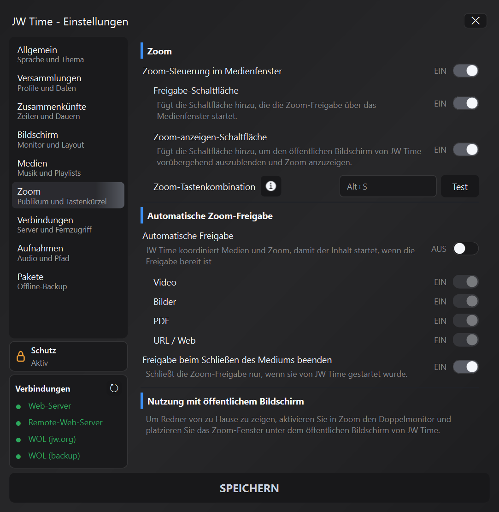
Zoom
Zoom-Steuerelemente: zeigen die dem Zoom gewidmeten Tasten im Medienfenster an.
Zoom-Freigabe: Aktiviert die Schaltfläche, die die Freigabeverknüpfung an Zoom sendet.
Zoom öffentlich anzeigen: aktiviert die Schaltfläche, die den öffentlichen JW Time-Bildschirm vorübergehend ausblendet, um die Lautsprecher oder das bereits darunter positionierte Zoom-Fenster auf dem Raummonitor anzuzeigen.
Freigabeverknüpfung– Dies muss dieselbe globale Verknüpfung sein, die in Zoom konfiguriert wurde, um die Bildschirmfreigabe zu starten oder zu stoppen.
Test: Senden Sie die Verknüpfung und prüfen Sie, ob Zoom geöffnet wird oder den Freigabestatus ändert.
Zoom-Verknüpfung
JW Time wählt das Fenster oder den Bildschirm, der in Zoom geteilt werden soll, nicht für Sie aus: Senden Sie die Tastenkombination
die Sie in diesem Panel angegeben haben. Aus diesem Grund muss die gleiche Verknüpfung auch in den Einstellungen aktiv sein
von Zoom, vorzugsweise als globale Verknüpfung. Wenn Sie in Zoom eine andere Kombination verwenden, funktionieren die Taste
Teilen und der Modus Auto Zoom möglicherweise nicht zuverlässig.
Überprüfen Sie vor der Zusammenkunft den gesamten Ablauf: Bereiten Sie Zoom auf dem öffentlichen Monitor vor und platzieren Sie den Öffentlichen Bildschirm darunter
Um das Lautsprecherfenster oder den duplizierten Zoom-Bildschirm anzuzeigen, versuchen Sie es mit der Verknüpfung mit Test und dann
Verwenden Sie die Steuerelemente aus dem Medienfenster.
Medienautomatisierung
Autostart: wenn die Taste gedrückt wird Auto Zoom im Medienfenster aktiv ist, beginnt die Freigabe, wenn ein Medium abgespielt wird.
Beim Schließen des Mediums unterbrechen: stoppt die Zoom-Freigabe, wenn das Medium geschlossen wird oder endet, aber nur wenn JW Time die Freigabe gestartet hat.
Anfängliche Pause: Bereitet das Medium auf eine Pause nach dem Start der Freigabe vor.
Fokus wiederherstellen: Setzt den Fokus nach der Zoom-Aktion wieder auf das Medienfenster.
Verwendung mit Zusammenkünften per Videokonferenz
Wenn jemand während einer Zusammenkunft per Videokonferenz JW Time von außerhalb des Netzwerks ansehen oder steuern muss,
wird das nicht im Zoom-Bereich konfiguriert: Verwenden Sie Abschnitt 8.3 · Fernzugriff für Zusammenkünfte per Videokonferenz.
In diesem Bereich bleiben nur Verknüpfungen, Freigabe und Verwaltung des Zoom-Fensters.
Dieses Panel verwaltet die Konnektivität der App: den Web-Monitor und den Webserver zur Anzeige und Steuerung über den Browser,
Der QR für schnellen Zugriff, Fernsteuerung, erweiterte Verbindungstests und Protokollverwaltung.
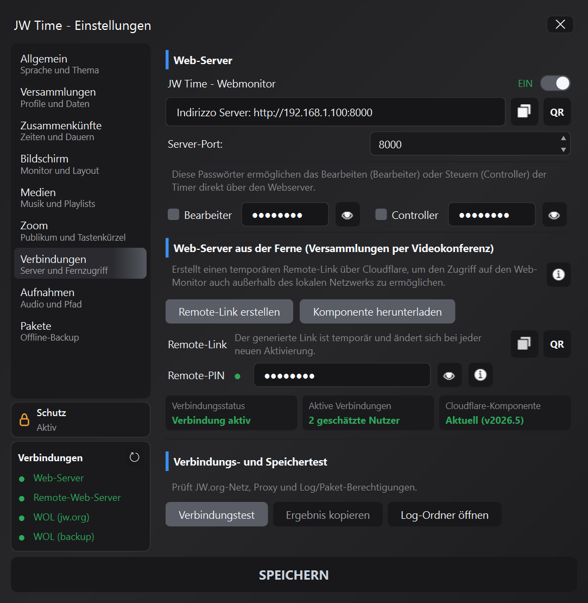
15.1 · Web-Monitor und Webserver
JW Time - Web-Monitor: Aktivieren oder deaktivieren Sie den internen Server.
Serveradresse: Zeigt die URL an, die im lokalen Netzwerk geöffnet werden soll. Im Handbuch verwenden wir eine generische Adresse, zum Beispiel http://192.168.1.100:8000.
Adresse kopieren: Kopiert die URL in die Zwischenablage.
QR: zeigt einen QR-Code an, um den Web-Monitor schneller von Ihrem Telefon oder Tablet aus zu öffnen.
Server-Port: Stellen Sie den HTTP-Port ein, normalerweise 8000.
Editor/Controller: Aktivieren Sie Passwörter, um Timer und Zeitpläne über den Browser zu bearbeiten oder zu steuern. Mit der Controller-Rolle wird der Web-Monitor auch zum Bedienpanel: Er kann starten, pausieren, stoppen und die verfügbaren Werte aktualisieren, ohne zum Hauptrechner zurückkehren zu müssen.
Im Web-Monitor wurde die Möglichkeit hinzugefügt, die Liednummern und die Namen der Programmpunkte sowohl im Editor-Modus als auch im Controller-Modus zu ändern.
Wenn der Webserver aktiv ist, kann JW Time von einem anderen Gerät im selben lokalen Netzwerk über einen Browser geöffnet werden.
um den Web-Monitor von Ihrem Telefon, Tablet oder einem anderen Computer aus zu verwenden.
15.2 · Remote-Webserver
Dieser Abschnitt wird verwendet, um den Web-Monitor auch außerhalb des lokalen Netzwerks erreichbar zu machen, beispielsweise während
Zusammenkünfte per Videokonferenz. Informationen zum Verwendungskontext finden Sie im Abschnitt Abschnitt 8.3 · Fernzugriff für Zusammenkünfte per Videokonferenz;
Hier finden Sie die praktischen Bedienelemente.
Remote-Link generieren: Erstellt einen temporären Link über die Cloudflare-Komponente, wenn Zugriff außerhalb des lokalen Netzwerks erforderlich ist.
Komponente herunterladen: Laden Sie die für die Remote-Verbindung erforderliche Komponente herunter.
Remote Link: Zeigt den generierten Link und die Schaltflächen „Kopieren/QR“ an.
Remote-PIN: Schützt den Zugriff auf Remote-Funktionen, wenn konfiguriert.
Linkstatus– Zeigt an, ob die Remote-Komponente, aktive Verbindungen und Cloudflare verfügbar sind.
15.3 · Fernsteuerung
Wenn die Funktion aktiviert ist, kann der Webserver nicht nur zum Anzeigen, sondern auch zum Ausführen verwendet werden
Ferngesteuerter Timer- und Programmbetrieb. Wenn die Controller-Rolle aktiviert ist, wird der Webbildschirm angezeigt
Steuert auch, um auf verfügbare Werte einzugreifen, beispielsweise auf die Dauer eines Teils.
Davon können folgende verfügbar sein:
Starten des Timers
Anhalten und Fortsetzen
Anhalten
Steuern des Programms/der Wiedergabeliste
Je nach Konfiguration können zur Unterscheidung unterschiedliche Zugriffsebenen verfügbar sein
einfache Abfrage aus den Steuer- oder Änderungsfunktionen.
15.4 · Verbindungstest
Verbindungstest: Überprüfen Sie Netzwerk, JW.org, Proxy und Schreibberechtigungen.
Ergebnis kopieren: Kopiert das Testergebnis zur Unterstützung oder Diagnose.
Protokollordner öffnen: Öffnet direkt den App-Protokollordner.
Audioaufzeichnungsfunktion für Zusammenkünfte, zugänglich über die Registerkarte „Aufzeichnungen“ in den Einstellungen und über die Schaltfläche REC im Hauptfenster.
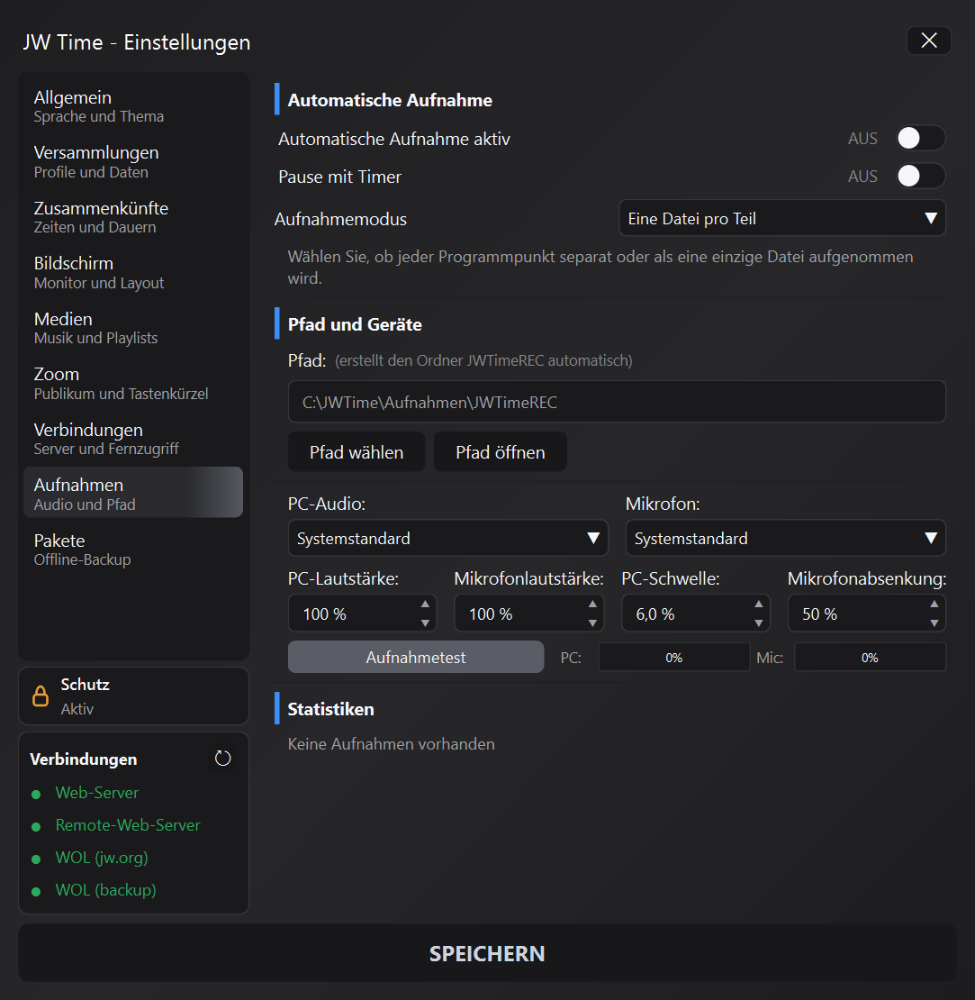
Automatische Aufnahme
Automatische Aufnahme aktiv: startet die Aufnahme, wenn der Timer startet, wenn die Funktion aktiviert ist.
Aufnahme pausieren, wenn der Timer pausiert: Pausiert auch die Aufnahme, wenn der Timer pausiert.
Aufnahmemodus: Wählen Sie zwischen einer Datei pro Teil oder einer einzelnen Datei pro Sitzung.
Pfad und Geräte
Pfad: Gibt den Ordner an, in dem die Dateien gespeichert werden sollen. Im Handbuch ist ein generischer Pfad angegeben.
Pfad auswählen: Wählen Sie den Zielordner aus.
Pfad öffnen: öffnet den Aufzeichnungsordner.
PC Audio: Wählen Sie die Computer-Audioquelle aus.
Mikrofon: Wählen Sie das Mikrofon aus, das zusammen mit dem PC-Audio aufgenommen werden soll.
PC-Lautstärke / Mikrofonlautstärke: Passt den Aufnahmepegel der beiden Quellen an.
PC-Schwellenwert: Definiert, wann PC-Audio als aktiv betrachtet werden soll.
Mikrofonreduzierung.: Senkt das Mikrofon automatisch ab, wenn der PC-Audiopegel den Schwellenwert überschreitet.
Aufzeichnungstest: Überprüfen Sie Geräte und Pegel vor der Zusammenkunft.
Statistik: Zeigt Informationen zu den durchgeführten Aufzeichnungen an.